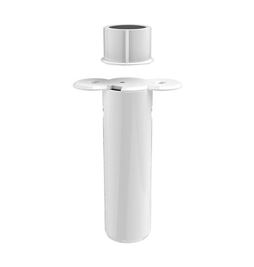

Aeon Labs Recessed Sensor¶

Brief information¶
- Aeon Labs Recessed Door Sensor Gen5 is a door detector that can detect the state of the door’s open/close. It is a notification sensor device based on Z-wave routing slave library V6.51.01
- Up to 100 feeds/30 metres indoor and 300 feeds/100 metres outdoor
- Battery lithium CR2, 3V, 800 mAh
- Work in -10 ~ 60 celcius, 8 ~ 80% huminity
How to add to VENUS app¶
- 1. Activation
- Press “Add button” (button ‘+’) in app
- Remove the plastic pull-tab from the back of device
- Wait for VENUS scan & detect this device and inform in app
- 2. Reset then re-add
- Press “Add button” (button ‘+’) in app
- Press z-wave button hiden under the hole on top of device to reset
- Press z-wave button again to add
- Wait for VENUS scan & detect this device and inform in app
Wake up information¶
Recessed Door Sensor will keep wake up for 10 seconds after it send wake up notification command. If it’s included into Z-wave network, the Recessed Door Sensor will wake for 10 minutes.
- Only 2 ways can abort this status:
- Z-wave Button held 6 seconds, then released, after 8 seconds, sleep right now;
- Recessed Door Sensor received “Wake up no more information CC”, sleep immediately;
Event and response¶
- Short press the Z-Wave Button
Add/Remove device into/from z-wave network
- Press and hold z-wave button for 6 seconds
- Device will be wake up and send Wake Up Notification with broadcast.
- Device will sleep after you released the z-wave button for 10 seconds, or sleep right away when received the Wake Up No More Information and then the led will turn off.
- Press and hold for 20 seconds
Recessed Door Sensor will be reset and send Device Reset Locally CC to controller.
How to add/remove associated device(s) to¶
To add associated device(s) to this sensor, below action is required:
- Add z-wave notified-devices (which will be associated to this sensor) to VENUS
- Select Associate button and then select notified-device(s) to add
- Wake-up this sensor: 1 time press z-wave button
- If successful, pop-up notification displays in VENUS app
To remove associated device(s) from this sensor, below action is required:
- Select Associate button and then select notified-device(s) to remove
- Wake-up this sensor: 1 time press z-wave button
- If successful, pop-up notification displays in VENUS app
Configuration description¶
Signal trigger device (Trigger to associated devices)
Available setting 0 - When the door/window OPENNED, the associated devices are triggered as ON.
And when the door/window is CLOSED, the associated devices are triggered as OFF.1 - When the door/window OPENED, the associated devices are triggered as OFF.
And when the door/window is CLOSED, the associated devices are triggered as ON.Default 0 Signal trigger controller (Trigger to controller - zwave controller embedded in VENUS firmware)
Available setting 0 - When the door/window is OPENNED, the controller is triggered as OPEN.
And when the door/window is CLOSED, the controller is triggered as CLOSE.1 - When the door/window is OPENNED, the controller is triggered as CLOSE.
And when the door/window is CLOSED, the controller is triggered as OPEN.Default 0 Report to (Select target to receive trigger events)
Available setting Device & Controller
Device
Controller
Nothing
Default Device & Controller
- Device & Controller: Associated devices, controller are assigned to receive events from device.
- Device: Only associated devices are assigned to receive events from device.
- Controller: Only controller is assigned to receive events from device.
- Nothing: No trigger deliveried
Technical specification¶
Configuration SET command format
B: byte, b: bit, command_class: COMMAND_CLASS_CONFIGURATION, command: CONFIGURATION_SET
command class command parameter number default(1) - reserve(4) - size(3) config val 1 config val 2 ... config val n
- Parameter 1 - 1 byte: Which value of the Sensor Binary Report will be sent when the magnet switch to open/close.
- 0x00: Open=Sensor Binary Report 0xFF, Close=Sensor Binary Report 0x00. (Default)
- 0x01: Open= Sensor Binary Report 0x00, Close=Sensor Binary Report 0xFF
- Parameter 3 - 1 byte: Which value of the Basic Set will be sent when the magnet switch to open/close.
- 0x00: Open= Basic Set 0xFF, Close=Basic Set 0x00 (Default)
- 0x01: Open= Basic Set 0x00, Close= Basic Set 0xFF
- Parameter 101 - 1 byte: Enable/disable the function of low battery checking, when the current voltage is less than the warning voltage, it will send the Battery Low Warning Report
- 0x00: Disable (Default)
- 0x01: Enable
- Parameter 111 - 4bytes: The Interval time of low battery checking.
- Range value: 0 ~ 0x7fffffff
- Minimun unit is 4 minutes. It means when user set 1 minute, interval time is 4 minutes and when user sets 7 minutes, interval time is 8 minutes.
- Default: 0x00015270
- This setting will be activated when low battery checking is enable (parameter 101)
- This device will also check current battery when it is waken-up
Parameter 121 - 4 byte: To set which command will be sent to the associated nodes when the magnet switch is triggered. See the below table.
Default: 0x00000100
reserve reserve reserve(7) - Basic set(1) reserve(3) - Binary report(1) - reserve(4)
- Basic set (1b): 0 - don’t send basic set; 1 - send basic set
- Binary report (1b): 0 - don’t send binary report; 1 - send binary report
- Parameter 252 - 1 byte: Lock/ unlock all configuration parameters
- 0x00: Unlock (default)
- 0x01: Lock